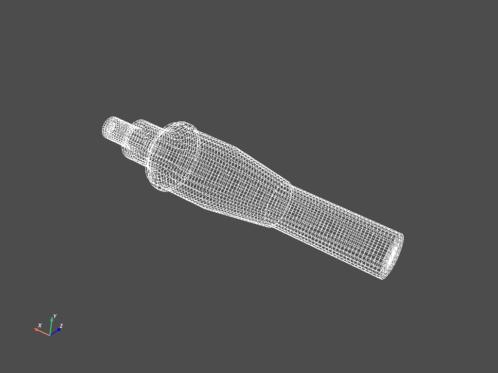

Note
Click here to download the full example code
Shaft Modal Analysis#
Visualize a shaft modal analysis
# sphinx_gallery_thumbnail_number = 6
from ansys.mapdl.reader import examples
# Download an example shaft modal analysis result file
shaft = examples.download_shaft_modal()
Mesh is stored within the result object
print(shaft.mesh)
ANSYS Mesh
Number of Nodes: 27132
Number of Elements: 25051
Number of Element Types: 6
Number of Node Components: 4
Number of Element Components: 3
…and contains a VTK unstructured grid
print(shaft.mesh._grid)
None
Plot the shaft
cpos = shaft.plot()
# list shaft node components
print(shaft.element_components.keys())
dict_keys(['EBC1', 'EBC2', 'SHAFT_MESH'])
Plot a node component
This camera angle was saved interactively from shaft.plot

Plot a node component as a wireframe
Plot the shaft with edges and with a blue color
shaft.plot(show_edges=True, color="cyan")
Plot the shaft without lighting but with edges and with a blue color
shaft.plot(lighting=False, show_edges=True, color="cyan")
plot a mode shape without contours using the “bwr” color map
/opt/hostedtoolcache/Python/3.10.7/x64/lib/python3.10/site-packages/pyvista/plotting/plotting.py:2282: PyvistaDeprecationWarning:
"stitle" is a depreciated keyword and will be removed in a future
release.
Use ``scalar_bar_args`` instead. For example:
scalar_bar_args={'title': 'Scalar Bar Title'}
warnings.warn(USE_SCALAR_BAR_ARGS, PyvistaDeprecationWarning)
plot a mode shape with contours and the default colormap

/opt/hostedtoolcache/Python/3.10.7/x64/lib/python3.10/site-packages/pyvista/plotting/plotting.py:2282: PyvistaDeprecationWarning:
"stitle" is a depreciated keyword and will be removed in a future
release.
Use ``scalar_bar_args`` instead. For example:
scalar_bar_args={'title': 'Scalar Bar Title'}
warnings.warn(USE_SCALAR_BAR_ARGS, PyvistaDeprecationWarning)
Animate a mode of a component the shaft
Set loop==True to plot continuously.
Disable movie_filename and increase n_frames for a smoother plot

[(-115.35773008378118, 285.36602704380107, -393.9029392590675),
(126.12852038381345, 0.2179228023931401, 5.236408799851887),
(0.3724622281297882, 0.8468424028124544, 0.37964435122285484)]
Total running time of the script: ( 0 minutes 12.742 seconds)